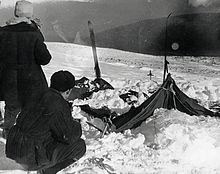
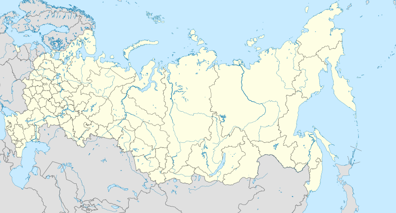
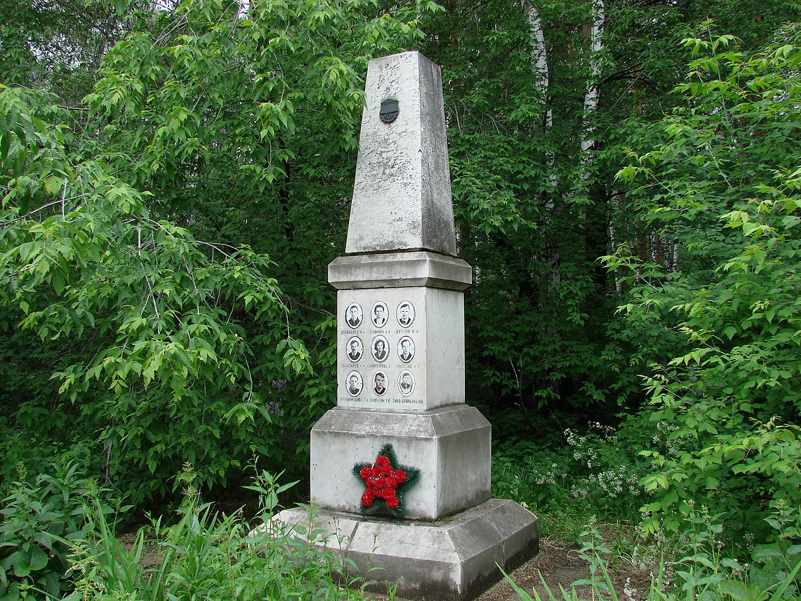

El incidente del paso Diátlov hace referencia a la muerte de nueve excursionistas el 1 de febrero de 1959 en los montes Urales, en una zona entre la República de Komi y el óblast de Sverdlovsk, en la República Federativa Soviética de Rusia, URSS, actual Rusia. El grupo, conformado por estudiantes del Instituto Politécnico de los Urales, a excepción de un guía local, acampó en la noche del 1 de febrero en la ladera oriental de la montaña Jólat Siajl (Холат Сяхл), un nombre mansi que significa «Montaña Muerta». Por razones que se desconocen rasgaron la tienda donde se cobijaban y se alejaron del campamento varios centenares de metros con vestimenta inadecuada, bajo una intensa nevada y con temperaturas gélidas de varios grados bajo cero.1 Tras la denuncia de la desaparición de la expedición se organizó una operación de rescate por unidades del ejército soviético con la colaboración de la población local y compañeros de la universidad donde cursaban sus estudios. 34 Con el descubrimiento de los cuerpos se procedió a realizar autopsias de los fallecidos revelando que algunos de los jóvenes fallecieron por hipotermia, mientras que otros presentaban evidencias de politraumatismo, o la mutilación de la lengua en uno de ellos. A pesar de las pruebas forenses y los elementos circunstanciales que rodean al caso, los investigadores concluyeron simplemente que "una fuerza desconocida e insuperable" había causado las muertes. Sin embargo, debido a lo poco convincente de la explicación han surgido numerosas teorías para tratar de determinar la causa de las muertes de los nueve excursionistas. 456 El acceso a la zona fue prohibido a esquiadores y otros aventureros durante tres años después del incidente. El puerto de montaña donde ocurrió el episodio fue nombrado más tarde como Paso Diátlov, en honor del líder de la expedición, Ígor Diátlov (Игорь Дятлов).
Con motivo de la realización de un viaje para la práctica del esquí de travesía por los montes Urales el 23 de enero de 1959 se reunieron en Ekaterimburgo un grupo de ocho hombres y dos mujeres. La mayoría eran estudiantes o graduados del Instituto Politécnico de los Urales (Уральский Политехнический Институт, УПИ), en la actualidad Universidad Técnica Estatal de los Urales de Ekaterimburgo. 35 El grupo estaba compuesto por:
Estaba previsto que otro estudiante, llamado Nikolái Popov, formase parte del equipo, pero en el último momento se cayó de los planes y el grupo finalmente quedó conformado con los diez excursionistas citados. 3
Se había acordado de antemano que Diátlov enviaría un telegrama a su club deportivo en la universidad cuando el grupo regresara a Vizhai. Se esperaba esto sucedería hacía el 12 de febrero, pero transcurrido este, y no habiendo sido recibido ningún mensaje, no hubo reacción ya que los retrasos de unos pocos días eran comunes en tales expediciones. 512 Sólo después de transcurridos varios días sin noticias los familiares exigieron una operación de salvamento que obligó a las autoridades de la universidad organizar grupos de rescate el 20 de febrero, compuestos al principio por estudiantes voluntarios y profesores. 512 Poco después se abre una investigación de manera oficial por el fiscal de Ivdel. La policía y fuerzas del ejército se involucran con aviones y helicópteros desde el día 23 uniéndose a las operación de rescate.
La autopsia de los cinco primeros cuerpos encontrados, reveló que no había lesiones que hubieran podido provocar la muerte de ninguno de ellos. Además de diversas abrasiones en cara y brazos en los cinco cadáveres, el análisis forense destacó una fisura de unos 6 centímetros que el hueso del cráneo de Rustem Slobodin y una contusión en el costado de Zinaída Kolmogórova producidos por objetos romos. La conclusión de los forenses fue que los cinco excursionistas localizados el 26 de febrero fallecieron por hipotermia. 312 Sin embargo, lejos de clarificar la secuencia de los hechos, las autopsias de los otros cuatro cuerpos hallados más tarde, cambió drásticamente el desarrollo de la investigación. Los cuatro fallecidos mostraban lesiones mortales. La autopsia posterior mostró que la lengua de Lyudmila Dubínina estaba ausente sin determinarse la causa de esta ausencia (fue el único cuerpo localizado sin lengua). 312 Además presentaba fracturas en las costillas al igual que su compañero Semión Zolotariov. Los otros dos mostraban traumatismos en la cabeza, siendo el de Nikolái Thibeaux-Brignolle de especial gravedad. Además, se encontraron trazas de radioactividad en algunas de las ropas de este grupo sin llegar a explicarse de manera convincente. 414 Las conclusiones forenses fue de muerte por politraumatismo provocado por causas no determinadas. 3469
